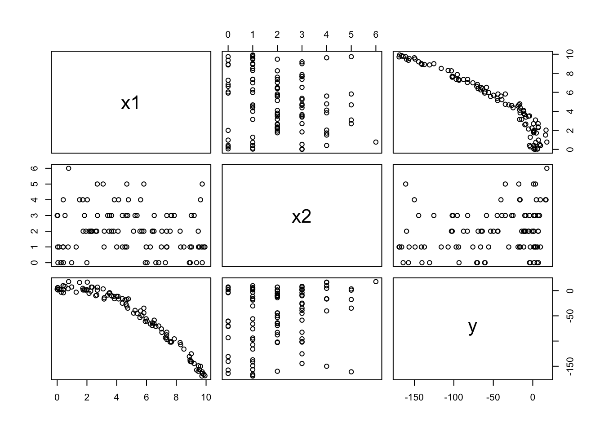
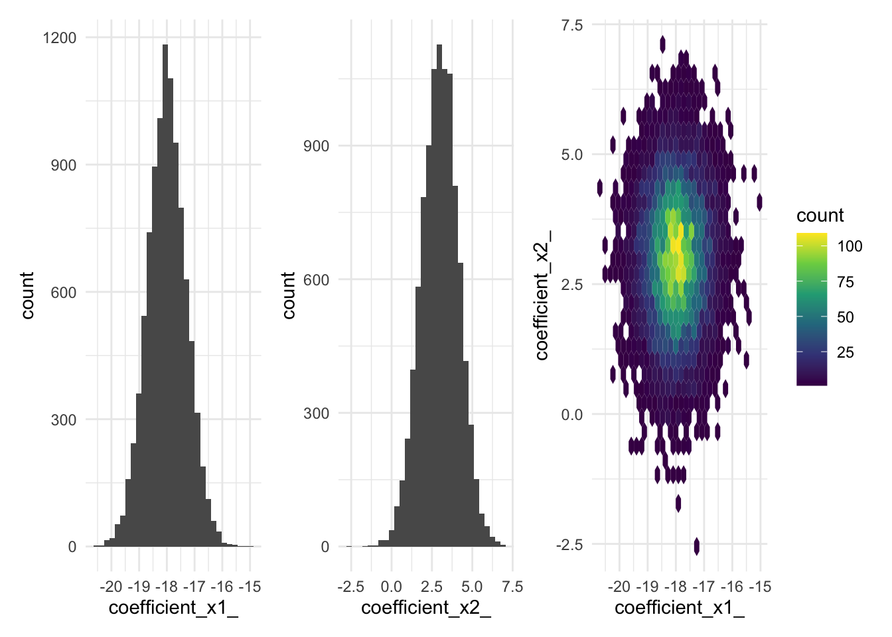

rA <- function(n, slope=0){
x = runif(n, min = -1, max = 1)
epsilon = runif(n, min = -.5, max = .5)
y = 0 + slope*x + epsilon
return(
data.frame(x=x, y=y)
)
}
rB <- function(n, slope=0){
x = runif(n, min = -1, max = 1)
epsilon = runif(n, min = - abs(x), max =abs(x))
y = 0 + slope*x + epsilon
return(
data.frame(x=x,y=y)
)
}
rC <- function(n, slope=0){
x = runif(n, min = -1, max = 1)
epsilon = runif(n, min = -1 + abs(x), max = 1 - abs(x))
y = 0 + slope*x + epsilon
return(
data.frame(x=x,y=y)
)
}9 OLS Regression Inference
9.1 Learning Objectives
After this week’s learning, student will be able to
- Describe how sampling based uncertainty is reflected in OLS regression parameter estimates.
- Report standard errors, and conduct tests for NHST of regression coefficients against zero.
- Conduct a regression based analysis, on real data, in ways that begin to explore regression as a modeling tool.
9.2 Class Announcements
- Congratulations on finishing your first lab!
- The next (and the last) lab is coming up in two weeks.
- Homework 09 has been assigned today, and it is due in a week.
9.3 Roadmap
Rear-View Mirror
- Statisticians create a population model to represent the world.
- Sometimes, the model includes an “outcome” random variable \(Y\) and “input” random variables \(X_1, X_2,...,X_k\).
- The joint distribution of \(Y\) and \(X_1, X_2,...,X_k\) is complicated.
- The best linear predictor (BLP) is the canonical way to summarize the relationship.
- OLS provides a point estimate of the BLP
Today
- Robust Standard Error: quantify the uncertainty of OLS coefficients
- Hypothesis testing with OLS coefficients
- Bootstrapping
Looking Ahead
- Regression is a foundational tool that can be applied to different contexts
- The process of building a regression model looks different, depending on whether the goal is prediction, description, or explanation.
9.4 Uncertainty in OLS
9.4.1 Discussion Questions
- List as many differences between the BLP and the OLS line as you can.
- In the following regression table, explain in your own words what the standard error in parentheses means.
| outcome: sleep hours | |
|---|---|
| mg. melatonin | 0.52 |
| (0.31) |
9.5 Understanding Uncertainty
Imagine three different regression models, each of the following form:
\[ Y = 0 + \beta X + \epsilon \]
The only difference is in the error term. The conditional distribution is given by:
| Model | Distribution of \(\epsilon\) cond. on \(X\) |
|---|---|
| A | Uniform on \([-.5, +.5]\) |
| B | Uniform on \([ - |X|, |X| ]\) |
| C | Uniform on \([ -1 + |X|, 1- |X| ]\) |
A is what we call a homoskedastic distribution. B and C are what we call heteroskedastic. Below, we define R functions that simulate draws from these three distributions.
data <- rbind(
data.frame( rA(200), label = 'A'),
data.frame( rB(200), label = 'B'),
data.frame( rC(200), label = 'C'))data %>%
ggplot(aes(x=x, y=y)) +
geom_point() +
lims(
x = c(-2,2),
y = c(-1,1)) +
labs(title = 'Samples Drawn from Three Distributions') +
facet_grid(rows=vars(label))
9.5.1 Question 1
The following code draws a sample from distribution A, fits a regression line, and plots it. Run it a few times to see what happens. Now explain how you would visually estimate the standard error of the slope coefficient. Why is this standard error important?
data <- rA(10, slope=0)
data %>%
ggplot() +
aes(x=x, y=y) +
geom_point() +
geom_smooth(method='lm', formula = 'y ~ x', se=FALSE) +
lims(
x = c(-2,2),
y = c(-1,1)) +
labs(title = 'Regression Fit to Distribution A')
data_points <- 200
base_plot_a <- rA(10) %>%
ggplot() +
aes(x=x, y=y) +
geom_point() +
scale_x_continuous(limits = c(-3, 3))
for(i in 1:100) {
base_plot_a <- base_plot_a + rA(data_points) %>%
stat_smooth(
mapping = aes(x=x, y=y),
method = 'lm', se = FALSE,
formula = 'y~x', fullrange = TRUE,
color = 'grey', alpha = 0.5,
size = 0.5
)
}Warning: Using `size` aesthetic for lines was deprecated in ggplot2 3.4.0.
ℹ Please use `linewidth` instead.base_plot_b <- rB(10) %>%
ggplot() +
aes(x=x, y=y) +
geom_point() +
scale_x_continuous(limits = c(-3, 3))
for(i in 1:100) {
base_plot_b <- base_plot_b + rB(data_points) %>%
stat_smooth(
mapping = aes(x=x, y=y),
method = 'lm', se = FALSE,
formula = 'y~x', fullrange = TRUE,
color = 'grey', alpha = 0.5,
size = 0.5
)
}
base_plot_c <- rC(10) %>%
ggplot() +
aes(x=x, y=y) +
geom_point() +
scale_x_continuous(limits = c(-3, 3))
for(i in 1:100) {
base_plot_c <- base_plot_c + rC(data_points) %>%
stat_smooth(
mapping = aes(x=x, y=y),
method = 'lm', se = FALSE,
formula = 'y~x', fullrange = TRUE,
color = 'grey', alpha = 0.5,
size = 0.5
)
}
base_plot_a + base_plot_b + base_plot_c + patchwork::plot_layout(axes = "collect")
?plot_layout()9.5.2 Question 2
You have a sample from each distribution, A, B, and C and you fit a regression of Y on X. Which will have the highest standard error for the slope coefficient? Which will have the lowest standard error? Why? (You may want to try experimenting with the function defined above)
9.5.3 Question 3
For distribution A, perform a simulated experiment. Draw a large number of samples, and for each sample fit a linear regression. Store the slope coefficient from each regression in a vector. Finally, compute the standard deviation for the slope coefficients.
Repeat this process for distributions B and C. Do the results match your intuition?
9.6 Understanding Uncertainty
Under the relatively stricter assumptions of constant error variance, the variance of a slope coefficient is given by
\[ V(\hat{\beta_j}) = \frac{\sigma^2}{SST_j (1-R_j^2)} \]
A similar formulation is given in FOAS as definition 4.2.3,
\[ \hat{V}_{C}[\hat{\beta}] = \hat{\sigma}^2 \left( X^{T} X \right)^{-1} \rightsquigarrow \hat{\sigma}^{2}{\left(\mathbb{X}^{T}\mathbb{X}\right)}, \] where \(\hat{\sigma}^{2} = V[\hat{\epsilon}]\)
Explain why each term makes the variance higher or lower:
- \(\hat{\sigma}^2\) is the variance of the error \(\hat{\epsilon}\)
- \(SST_j\) is (unscaled) variance of \(X_j\)
- \(R_j^2\) is \(R^2\) for a regression of \(X_j\) on the other \(X\)’s
9.7 R Exercise
Real Estate in Boston
The file hprice1.RData contains 88 observations of homes in the Boston area, taken from the real estate pages of the Boston Globe during 1990. This data was provided by Wooldridge.
load('data/hprice1.RData') # provides 3 objects Last week, we fit a regression of price on square feet.
model_one <- lm(price ~ sqrft, data = data)
model_one$df.residual[1] 86Can you use the pieces that you’re familiar with to produce a p-value using robust standard errors?
regression_p_value <- function(model, variable) {
## this function takes a model
## and computes a test-statistic,
## then compares that test-statistic against the
## appropriate t-distribution
## you can use the following helper functions:
## - coef()
## - vcovHC()
df <- model$df.residual
# numerator <- 'fill this in'
# denominator <- 'fill this in'
numerator <- coef(model)[variable]
denominator <- sqrt(diag(vcovHC(model)))[variable]
test_stat_ <- numerator / denominator
p_val_ <- 'fill this in'
p_val_ <- pt(test_stat_, df = df, lower.tail = FALSE) * 2
return(p_val_)
}If you want to confirm that what you have written is correct, you can compare against the value that you receive from the line below.
coeftest(model_one, vcov. = vcovHC(model_one))
t test of coefficients:
Estimate Std. Error t value Pr(>|t|)
(Intercept) 11.204145 39.450563 0.2840 0.7771
sqrft 0.140211 0.021111 6.6417 2.673e-09 ***
---
Signif. codes: 0 '***' 0.001 '**' 0.01 '*' 0.05 '.' 0.1 ' ' 1p_value_ <- broom::tidy(coeftest(model_one, vcov. = vcovHC(model_one))) %>%
filter(term == 'sqrft') %>%
select('p.value') %>%
as.numeric()
test_that(
'test that hand coded p-value is the same as the pre-rolled',
expect_equal(
object = as.numeric(regression_p_value(model_one, 'sqrft')),
expected = p_value_
)
)Test passed 🎉Questions
- Estimate a new model (and save it into another object) that includes the size of the lot and whether the house is a colonial. This will estimate the model:
\[ price = \beta_{0} + \beta_{1} sqrft + \beta_{2} lotsize + \beta_{3} colonial? + e \]
- BUT BEFORE YOU DO, make a prediction: What do you think is going to happen to the coefficient that relates square footage and price?
- Will the coefficient increase, decrease, or stay the same?
- Will the uncertainty about the coefficient increase, decrease, or stay the same?
- Conduct an F-test that evaluates whether the model as a whole does better when the coefficients on
colonialandlotsizeare allowed to estimate freely, or instead are restricted to be zero (i.e. \(\beta_{2} = \beta_{3} = 0\).
- Use the function
vcovHCfrom thesandwichpackage to estimate (a) the the heteroskedastic consistent (i.e. “robust”) variance covariance matrix; and (b) the robust standard errors for the intercept and slope of this regression. Recall, what is the relationship between the VCOV and SE in a regression?
- Perform a hypothesis test to check whether the population relationship between
sqrftandpriceis zero. Usecoeftest()with the robust standard errors computed above.
Use the robust standard error and
qtto compute a 95% confidence interval for the coefficientsqrftin the second model that you estimated. \(price = \beta_{0} + \beta_{1} sqrft + \beta_{2} lotsize + \beta_{3} colonial\).Bootstrap. The book very quickly talks about bootstrapping which is the process of sampling with replacement and fitting a model. The idea behind the bootstrap is that since the data is generated via an iid sample from the population, that you can simulate re-running your analysis by drawing repeated samples from the data that you have.
Below is code that will conduct a boostrapping estimator of the uncertainty of the sqrft variable when lotsize and colonial are included in the model.
bootstrap_sqft <- function(d = data, number_of_bootstraps = 1000) {
number_of_rows <- nrow(d)
coef_sqft <- rep(NA, number_of_bootstraps)
for(i in 1:number_of_bootstraps) {
bootstrap_data <- d[sample(x=1:number_of_rows, size=number_of_rows, replace=TRUE), ]
estimated_model <- lm(price ~ sqrft, data = bootstrap_data)
coef_sqft[i] <- coef(estimated_model)['sqrft']
}
return(coef_sqft)
}bootstrap_result <- bootstrap_sqft(d = data, number_of_bootstraps = 10000)With this, it is possible to plot the distribution of these regression coefficients:
ggplot() +
aes(x = bootstrap_result) +
geom_histogram() +
labs(
x = 'Estimated Coefficient',
y = 'Count',
title = 'Bootstrap coefficients for square footage'
)`stat_bin()` using `bins = 30`. Pick better value with `binwidth`.
Compute the standard deviation of the bootstrapped regression coefficients. How does this compare to the robust standard errors you computed above?
coeftest(model_one, vcov. = vcovHC(model_one))
t test of coefficients:
Estimate Std. Error t value Pr(>|t|)
(Intercept) 11.204145 39.450563 0.2840 0.7771
sqrft 0.140211 0.021111 6.6417 2.673e-09 ***
---
Signif. codes: 0 '***' 0.001 '**' 0.01 '*' 0.05 '.' 0.1 ' ' 1sd(bootstrap_result)[1] 0.01970232